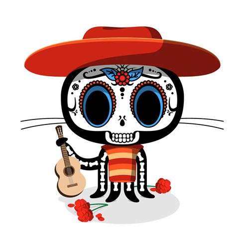

A. A version control system is a tool used to track and manage changes to software codes of many languages.
Q. What is Git?
A. Git is an open source version control system.
Q. What is GitHub?
A. GitHub is a cloud-based implementation of the open source Git repository. This website helps developers store, manage, and track changes to their code
Q. What is the difference between Git and GitHub?
A. Git is an application based VCS, meant to help keep track of individual projects. Github is a web-based Git repository, which offers features similar to Git with an increased focus on collaboration.
Q. Who started GitHub and how was it started?
A. Chris Wanstrath, P.J. Hyett, Tom Preston-Werner & Scott Chacon founded GitHub in 2007. It started as a tool of necessity.
Q. What company owns it now?
A. Microsoft
Q. How much does a GitHub account cost?
A. $0 for the Free Edition, $4 per user/month for a team, and $21 per user/month for an enterprise.
Q. What is the Octocat?
A. Octocat is GitHub's mascot and represents the unbreakable spirit of scrappy software developers
Git/GitHub terms:
repository - the most basic element of Git/GitHub, a project's folder
commit - individual change made to a file or set of files
fork - personal copy of another repository. This allows you to make changes without affecting the original repository
push - To send your committed changes to a remote repository on GitHub.com.
pull requests - Proposed changes to a repository submitted by a user to be approved or denied by a repository's owner
workflows - Configurable process that will run one or more jobs automatically
issues - Suggested improvements, tasks or questions related to a repository. Can be created by anyone and are moderated by repository owners.
raw button - View or copy the raw content of a file without any styling.
blame button - describes the last modification to each line of a file, which typically displays the revision, author and time.

Octocat image by Cameron McEfee, The Octocat-a nerdy household name